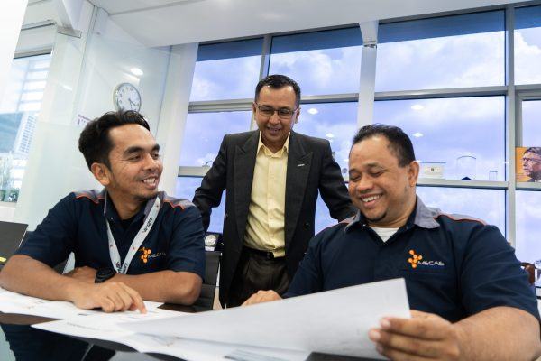

Explore Career Opportunities with Us
At Uzma Geospatial AI Sdn Bhd, we believe in harnessing talent to drive innovation and excellence. More than just a job, we offer a transformative journey where you can shape the future of geospatial intelligence and energy solutions. Joining our team means collaborating with passionate professionals, embracing challenges, and delivering impactful results.
We foster a culture of diversity, continuous learning, and excellence. Whether you're an experienced professional or a fresh graduate, Uzma Geospatial AI welcomes you to explore career opportunities that empower you to grow and make a meaningful impact.
Submit Your Resume Now